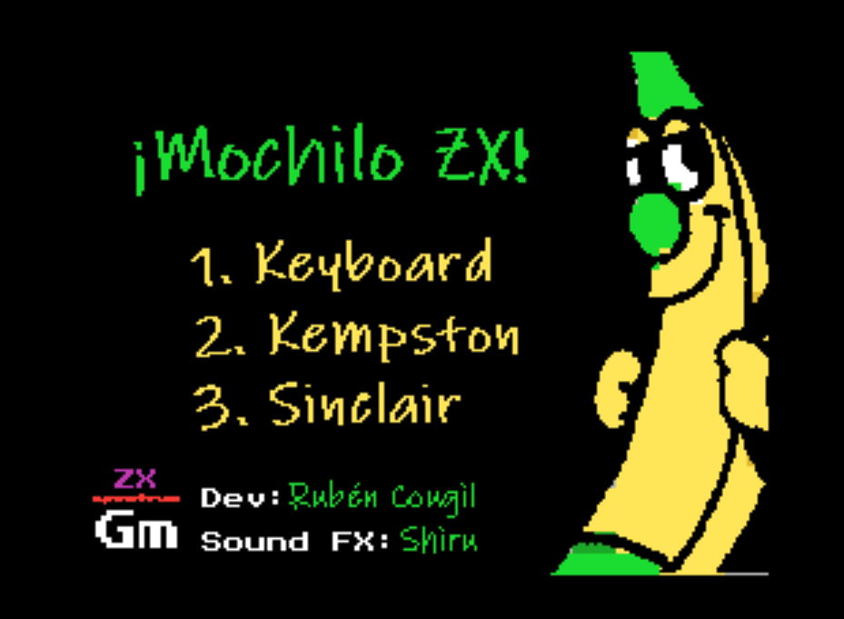

ZX Spectrum · ZX Game Maker
¡Mochilo ZX!
Vuelve a los 8 bits. Juega a Mochilo ZX , el juego de ZX Spectrum de Rubén Cougil , directamente en tu navegador.

Jugar aquí ▶
Sin instalar un emulador. Necesitas un teclado para jugar.
Activa JavaScript para jugar aquí o descarga la cinta .TAP para tu emulador.
El emulador solo se carga al pulsar Jugar aquí.
Teclado: 1 empezar O izquierdaP derechaQ saltar
Cerrar el juego
Sobre el juego
Un homenaje al ZX Spectrum
Mochilo ZX es un juego retro para ZX Spectrum creado por Rubén Cougil con ZX Game Maker , con estética de 8 bits.
Esta página permite jugar en el navegador gracias a JSSpeccy . También puedes encontrar el juego en itch.io .
Desarrollo: Rubén Cougil. Efectos de sonido: Shiru.
Controles
Cómo empezar a jugar
Pulsa Jugar aquí para abrir el emulador.
Cuando aparezca el menú del juego, pulsa 1 para seleccionar Keyboard .
Usa O para ir a la izquierda, P para ir a la derecha y Q para saltar.
Haz clic en la pantalla del juego para darle el foco. Puedes pausar el emulador o ponerlo a pantalla completa con sus botones.
Los juegos se disfrutan más compartidos
Pasa el juego a alguien
Comparte el enlace para que más gente conozca Mochilo ZX y pueda jugar aquí.
Enlace del juego: selecciónalo y cópialo
Antes de jugar
Preguntas frecuentes
¿Necesito instalar algo?
No necesitas instalar un emulador para jugar en esta página. Necesitas JavaScript, un navegador compatible con WebAssembly y un teclado. El emulador se descarga al pulsar Jugar aquí, no al abrir la página.
¿Puedo jugar desde un móvil?
La página y la pantalla del emulador se adaptan al móvil, pero los controles del juego necesitan un teclado físico. Para jugar con más comodidad, usa un ordenador con teclado.
¿Puedo usar mi propio emulador de ZX Spectrum?
Sí. Puedes descargar la cinta Mochilo ZX en formato .TAP y abrirla con un emulador compatible. La ficha del juego en itch.io es otra forma de encontrarlo.
¿Quién ha creado Mochilo ZX?
Rubén Cougil ha desarrollado el juego con ZX Game Maker. Puedes conocer sus otros proyectos en ruben.cougil.com y seguirle en X, @rcougil .